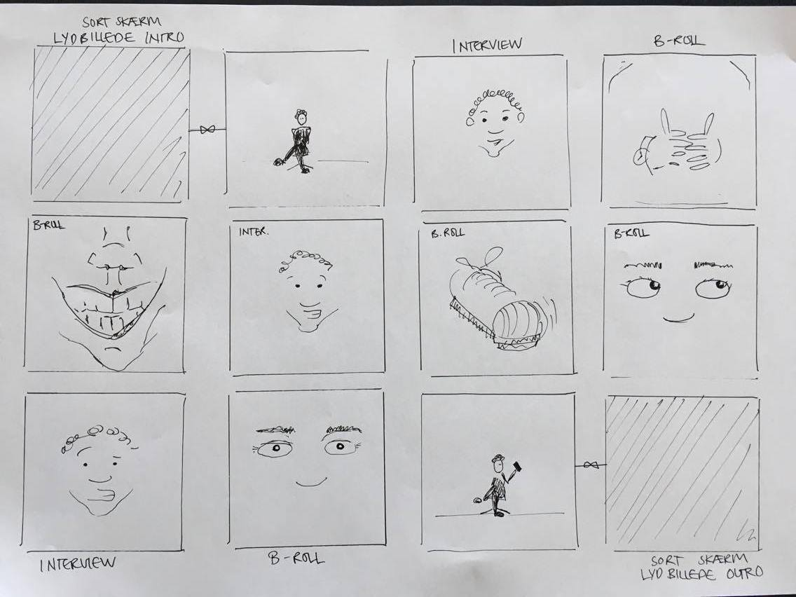

I andet projekt i forløbet ”Grundlæggende Video” skulle vi producere en video for vores klient, CPH:DOX. CPH:DOX ønskede en videoproduktion som skulle være en del af deres Everyday Project, videoen skule tage fat i henholdsvis selvoptaget eller demokrati. Min gruppe bestod af Augusta, Bini og Mikael, vi valgte at lave en produktion omkring emnet selvoptaget.
Vi arbejdede sammen i gruppen om at udvikle spørgsmål til interviewet samt udarbejde storyboard. Min rolle under interviewet bestod i at filme og indstilling af kamera.
Vi valgte at fokusere på emnet selvoptaget, for at sætte fokus på anerkendelsen gennem sociale medier og manglen af samme. Vores produktion handler om Lior, som laver et socialt eksperiment på sig selv, for at opnå anerkendelse uden brug af sociale medier. Filmen blev optaget i et sterilt miljø, da vi ønskede, at sætte fokus på vores interview person og hans historie. Derfor indeholder filmen også udelukkende klip af Lior. Filmen kan ses nedenfor.
I forbindelse med projektet skulle vi udarbejde et dokumentations website, som skulle dokumentere vores arbejdsproces med synopsis, storyboard og den færdige video samt en kort beskrivelse af den.
Link til vores dokumentations website findes her.